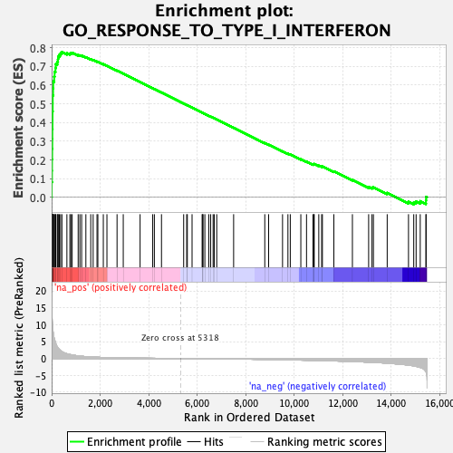
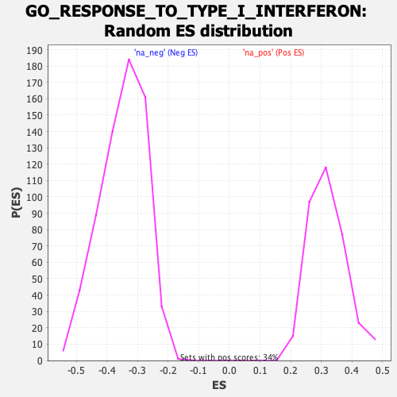

| | | Dataset | DE_genes |
| Phenotype | NoPhenotypeAvailable |
| Upregulated in class | na_pos |
| GeneSet | GO_RESPONSE_TO_TYPE_I_INTERFERON |
| Enrichment Score (ES) | 0.7765835 |
| Normalized Enrichment Score (NES) | 2.4306917 |
| Nominal p-value | 0.0 |
| FDR q-value | 0.0 |
| FWER p-Value | 0.0 |
Table: GSEA Results Summary

Fig 1: Enrichment plot: GO_RESPONSE_TO_TYPE_I_INTERFERON
Profile of the Running ES Score & Positions of GeneSet Members on the Rank Ordered List
| PROBE | GENE SYMBOL | GENE_TITLE | RANK IN GENE LIST | RANK METRIC SCORE | RUNNING ES | CORE ENRICHMENT | | 1 | IFI6 | | | 4 | 16.766 | 0.0806 | Yes |
| 2 | IFIT1 | | | 14 | 12.905 | 0.1423 | Yes |
| 3 | OAS1 | | | 16 | 12.691 | 0.2034 | Yes |
| 4 | IFITM2 | | | 23 | 11.709 | 0.2595 | Yes |
| 5 | IFIT3 | | | 28 | 10.985 | 0.3123 | Yes |
| 6 | IFIT2 | | | 30 | 10.658 | 0.3636 | Yes |
| 7 | OAS3 | | | 36 | 9.869 | 0.4109 | Yes |
| 8 | MX2 | | | 37 | 9.799 | 0.4582 | Yes |
| 9 | ISG15 | | | 44 | 9.032 | 0.5014 | Yes |
| 10 | OAS2 | | | 45 | 8.995 | 0.5447 | Yes |
| 11 | MX1 | | | 61 | 7.913 | 0.5819 | Yes |
| 12 | IFITM1 | | | 66 | 7.728 | 0.6190 | Yes |
| 13 | ZBP1 | | | 106 | 5.971 | 0.6452 | Yes |
| 14 | IFITM3 | | | 123 | 5.548 | 0.6710 | Yes |
| 15 | RSAD2 | | | 158 | 4.670 | 0.6913 | Yes |
| 16 | OASL | | | 171 | 4.469 | 0.7121 | Yes |
| 17 | STAT1 | | | 233 | 3.445 | 0.7247 | Yes |
| 18 | XAF1 | | | 260 | 3.141 | 0.7382 | Yes |
| 19 | IRF9 | | | 269 | 3.053 | 0.7524 | Yes |
| 20 | IRF2 | | | 318 | 2.629 | 0.7619 | Yes |
| 21 | IRF7 | | | 368 | 2.364 | 0.7702 | Yes |
| 22 | STAT2 | | | 423 | 2.057 | 0.7766 | Yes |
| 23 | IRF5 | | | 629 | 1.404 | 0.7700 | No |
| 24 | MYD88 | | | 752 | 1.190 | 0.7679 | No |
| 25 | GBP2 | | | 792 | 1.122 | 0.7707 | No |
| 26 | PTPN6 | | | 846 | 1.047 | 0.7723 | No |
| 27 | SP100 | | | 1093 | 0.759 | 0.7600 | No |
| 28 | CNOT7 | | | 1163 | 0.708 | 0.7590 | No |
| 29 | WNT5A | | | 1236 | 0.653 | 0.7574 | No |
| 30 | ADAR | | | 1411 | 0.563 | 0.7488 | No |
| 31 | IKBKE | | | 1612 | 0.468 | 0.7381 | No |
| 32 | IFI27 | | | 1711 | 0.427 | 0.7338 | No |
| 33 | HLA-G | | | 1870 | 0.363 | 0.7253 | No |
| 34 | IFI35 | | | 1905 | 0.353 | 0.7248 | No |
| 35 | SAMHD1 | | | 2130 | 0.288 | 0.7116 | No |
| 36 | RNASEL | | | 2279 | 0.248 | 0.7032 | No |
| 37 | PTPN2 | | | 2696 | 0.176 | 0.6770 | No |
| 38 | SCRIB | | | 2952 | 0.145 | 0.6611 | No |
| 39 | YTHDF3 | | | 3646 | 0.089 | 0.6165 | No |
| 40 | TREX1 | | | 4166 | 0.060 | 0.5831 | No |
| 41 | JAK1 | | | 4234 | 0.057 | 0.5790 | No |
| 42 | TYK2 | | | 4528 | 0.040 | 0.5602 | No |
| 43 | IRF6 | | | 5442 | -0.006 | 0.5009 | No |
| 44 | SETD2 | | | 5567 | -0.013 | 0.4929 | No |
| 45 | IFNAR2 | | | 5593 | -0.015 | 0.4913 | No |
| 46 | TRIM6 | | | 5788 | -0.026 | 0.4789 | No |
| 47 | ISG20 | | | 6203 | -0.053 | 0.4522 | No |
| 48 | ABCE1 | | | 6228 | -0.054 | 0.4509 | No |
| 49 | SHMT2 | | | 6237 | -0.055 | 0.4507 | No |
| 50 | BST2 | | | 6315 | -0.060 | 0.4460 | No |
| 51 | HLA-E | | | 6478 | -0.071 | 0.4358 | No |
| 52 | FADD | | | 6555 | -0.076 | 0.4312 | No |
| 53 | IRF3 | | | 6655 | -0.085 | 0.4252 | No |
| 54 | USP18 | | | 6702 | -0.088 | 0.4226 | No |
| 55 | UBE2K | | | 6805 | -0.096 | 0.4164 | No |
| 56 | IFNAR1 | | | 7501 | -0.152 | 0.3720 | No |
| 57 | HSP90AB1 | | | 8785 | -0.284 | 0.2900 | No |
| 58 | TBK1 | | | 8944 | -0.303 | 0.2812 | No |
| 59 | IRF1 | | | 9517 | -0.375 | 0.2459 | No |
| 60 | MIR21 | | | 9739 | -0.409 | 0.2335 | No |
| 61 | TTLL12 | | | 9836 | -0.422 | 0.2293 | No |
| 62 | IRAK1 | | | 10271 | -0.487 | 0.2034 | No |
| 63 | YTHDF2 | | | 10506 | -0.521 | 0.1907 | No |
| 64 | NLRC5 | | | 10769 | -0.563 | 0.1764 | No |
| 65 | TRIM56 | | | 10809 | -0.568 | 0.1766 | No |
| 66 | PTPN11 | | | 10823 | -0.571 | 0.1786 | No |
| 67 | IRF8 | | | 11011 | -0.599 | 0.1693 | No |
| 68 | MAVS | | | 11130 | -0.622 | 0.1646 | No |
| 69 | MMP12 | | | 11160 | -0.629 | 0.1658 | No |
| 70 | LSM14A | | | 11632 | -0.729 | 0.1387 | No |
| 71 | PSMB8 | | | 12397 | -0.903 | 0.0934 | No |
| 72 | IP6K2 | | | 13066 | -1.096 | 0.0553 | No |
| 73 | CACTIN | | | 13204 | -1.141 | 0.0519 | No |
| 74 | IRF4 | | | 13264 | -1.160 | 0.0537 | No |
| 75 | HLA-F | | | 13831 | -1.392 | 0.0236 | No |
| 76 | PTPN1 | | | 14709 | -1.984 | -0.0238 | No |
| 77 | HLA-H | | | 14925 | -2.193 | -0.0272 | No |
| 78 | MUL1 | | | 15023 | -2.336 | -0.0222 | No |
| 79 | METTL3 | | | 15193 | -2.641 | -0.0205 | No |
| 80 | CDC37 | | | 15428 | -3.952 | -0.0166 | No |
| 81 | EGR1 | | | 15434 | -4.010 | 0.0024 | No |
Table: GSEA details [plain text format]

Fig 2: GO_RESPONSE_TO_TYPE_I_INTERFERON: Random ES distribution
Gene set null distribution of ES for GO_RESPONSE_TO_TYPE_I_INTERFERON